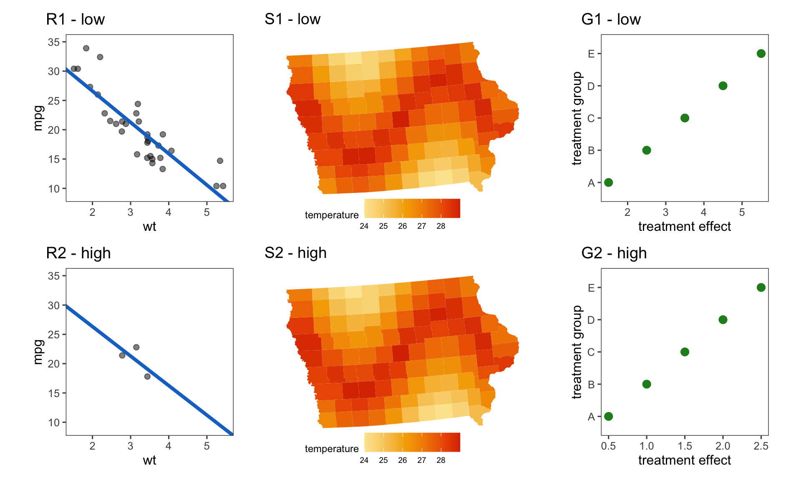
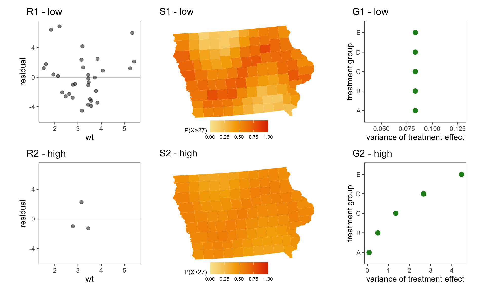
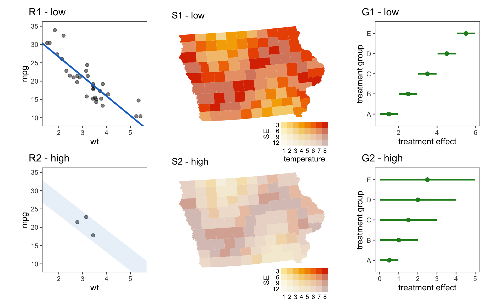
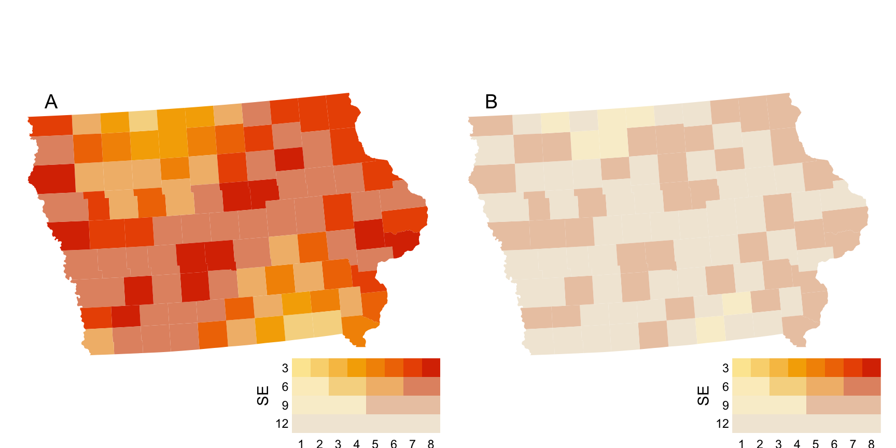
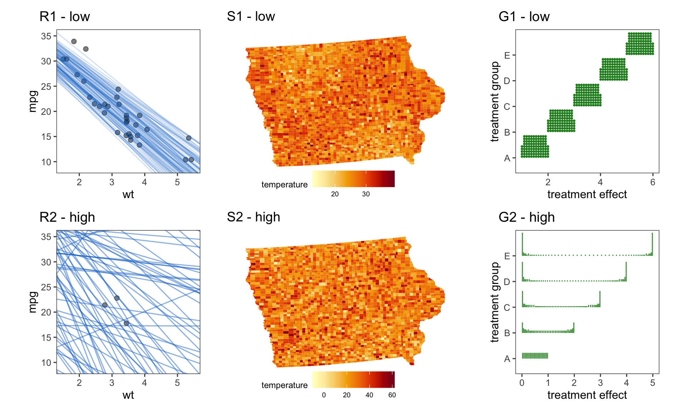

2 The Noisy Work of Uncertainty Visualisation
2.1 Introduction
What do we mean when we talk about “uncertainty visualisation”? The phrase can feel contradictory to anyone familiar with the term. Among statisticians, “uncertainty” is often discussed as an omnipresent spectre touching every stage of our analysis without ever being fully seen. Authors will often mention that the phrase is vague (Griethe and Schumann 2006; Spiegelhalter 2017), or avoid defining it by describing a list of things uncertainty could be (Hullman 2016; Kinkeldey et al. 2014), but rarely do authors attempt to discuss what uncertainty actually is. By contrast, visual statistics (information visualisations, data plots) are one of the most powerful tools in the statistician’s toolbox, allowing for quick and memorable communication that identifies quirks in our data that we didn’t even know to look for. We see this in datasets such as Anscombe’s quartet (Anscombe 1973) or the Datasaurus Dozen (Locke and D’Agostino McGowan 2018; Matejka and Fitzmaurice 2017), where visual statistics are able to highlight elements of the data that are invisible to the typical summary statistics. We also see this in recall experiments, where simply sketching a distribution before recalling statistics or making predictions can greatly increase the accuracy of those measures (Goldstein and Rothschild 2014; Hullman et al. 2018). Taken together, uncertainty visualisation implies a need to pull back the curtain and explore the unknowns of our analysis.
As nice as this sentiment is, it turns out to be easier said than done. Reviews on uncertainty visualisation rarely offer tried and tested rules for effective uncertainty visualisation, instead commenting on the difficulties faced when trying to summarise the field. Kinkeldey et al. (2014) found most experimental methods to be ad hoc, with no commonly agreed upon methodology, formalisations, or a greater goal of describing general principles. Hullman (2016) noticed there is a serious noise issue in the field, with errors from participants misunderstanding visualisations, misinterpreting questions, and incorrectly applying heuristics, overwhelming any information we can glean from studies. MacEachren et al. (2005) identified so many contradictions that they spent an entire page discussing the conflicting evidence for the question “Should I map uncertainty to colour hue?”. Spiegelhalter (2017) concluded that different plots are good for different things, arguing against a universal best plot for all people and circumstances. Padilla et al. (2022b) summarised several cognitive effects that repeatedly arise in uncertainty visualisation experiments, but these effects were each discussed in isolation as a list of considerations rather than an overarching theory for effective uncertainty visualisation.
“Science is built up of facts, as a house is built of stones; but an accumulation of facts is no more a science than a heap of stones is a house.” - Henri Poincaré (1905)
While these reviews are thorough in scope, none discuss how the existing literature contributes to the broader goal of uncertainty visualisation – that is, despite the wealth of reviews, the field of uncertainty visualisation remains a heap of stones. There is a mountain of work that identifies common heuristics found in uncertainty visualisations, evaluates competing plot designs, or starts a theoretical discussion on a niche aspect of the field. While important, each of these papers offers up its own bespoke motivation and methodology, with little reference to the uncertainty visualisation papers outside their fiefdom. The field is in desperate need of a unifying theory that can tie the conflicting and siloed research together. This review attempts to address this issue by offering a novel perspective on the uncertainty visualisation problem. That is, we will use the wealth of established stone to construct a foundation to build a house.
2.2 The purpose of uncertainty visualisation
Mentions of “uncertainty visualisation” start springing up around 1990, across several different fields (Ibrekk and Morgan 1987; MacEachren 1992), each with its own motivation for the work. In computer science, the area appears to be motivated by issues in the public’s perception of random variables, with the hope that visualisations would give laypeople the ability to extract important information from graphical representations (Ibrekk and Morgan 1987). With similar concerns about the public’s understanding of randomness, the fields of psychology, statistics, and economics used “uncertainty visualisations” as a communication tool to mitigate the psychological bias associated with the communication of risk, a topic of concern since the early 1980s (Spiegelhalter 2017). In cartography, it was motivated by the inherent uncertainty of geoscience data, the practical use of visualisation as an exploratory tool, and the constrained visual channels from map representations (MacEachren 1992). These disparate motivations have blended together, and today, uncertainty visualisation is usually motivated by the vague goal of “decision-making”. This term has been used to mean the mitigation of psychological bias to ensure economically rational decisions (Kale et al. 2021; Padilla et al. 2021, 2022a), the facilitation of trust or confidence (Yang et al. 2023; Zhao et al. 2023), the ability to extract values related to a distribution (Sarma et al. 2023), the prevention of false discovery in plots (Koonchanok et al. 2023; Sarma et al. 2024), or the extraction of some other metric that is vaguely related to “uncertainty” (Chakraborty et al. 2024; Ndlovu et al. 2023). This gradual scope creep of the field, motivated by the hazy definition of “decision-making”, is the most likely culprit for the jumbled literature that makes up the field today.
Given that there is so much subliminal disagreement in uncertainty visualisation, how did these disparate motivations come to be seen as interchangeable? All discussions on uncertainty visualisation seem to have a common thread that connects them: the belief that the ultimate goal of uncertainty visualisation is not trust, rationality, or value extraction, but transparency. We see it said directly in reviews of the field (Padilla et al. 2022b), or when authors claim that failing to include uncertainty is akin to fraud or lying (Hullman 2020; Manski 2020). We see it when authors assert that uncertainty communicates the legitimacy (or illegitimacy) of the conclusion drawn from visual inference (Griethe and Schumann 2006; Kale et al. 2018). We see it when authors say uncertainty visualisations should communicate a degree of confidence (Boukhelifa et al. 2012; Correll et al. 2018) or validity (Griethe and Schumann 2006; Hullman 2020) in our conclusions. We see it when authors suggest uncertainty visualisation should “guide, qualify, or soften our judgements of uncertain data” (e.g., Wilkinson (2005) in his seminal work on the grammar of graphics). These authors are not wrong about the need for transparency in science communication: a six-month survey of anti-mask groups on Facebook during the COVID-19 pandemic showed that anti-maskers made persuasive arguments by exploiting inherent uncertainty ignored by pro-maskers (Lee et al. 2021).
Uncertainty visualisation is motivated by the need for a sort of “visual hypothesis test”, a sentiment expressed by some authors directly (Correll and Gleicher 2014; MacEachren 1992). A successful uncertainty visualisation would act as a “statistical hedge” for any inference we make using the graphic. Since the purpose of a visualisation is to give a quick gist of the information (Spiegelhalter 2017), this hedging should be communicated visually without the need for complicated mental calculations. Therefore, an effective uncertainty visualisation should not just “show” uncertainty; untrustworthy conclusions should not be visible. If we refer to the conclusion we draw from a graphic as its “signal”, and the uncertainty that should make this signal harder to read as the “noise”, we can summarise the above information into three key requirements. A good uncertainty visualisation should:
- Reinforce justified signals to encourage confidence in results.
- Hide spurious signals that are overwhelmed by noise.
- Perform tasks 1) and 2) in a way that is proportional to the level of confidence in those conclusions.
Usually, visualisations that are unconcerned with uncertainty have no issue showing justified signals, but struggle with the display of unjustified signals. Therefore, we suggest calling this approach to uncertainty visualisation “signal-suppression” since it primarily differentiates itself from the normal “noiseless” visualisation approach through criterion (2). This is the main criterion we will use to assess the current literature on uncertainty visualisation.
2.3 Current Approaches
2.3.1 Ignoring uncertainty
The most common way to visualise uncertainty is to simply not. A study conducted by Hullman (2020) found that only a quarter of authors surveyed included uncertainty in 50% or more of their visualisations, in part because authors are not sure how to calculate uncertainty. This is not entirely unreasonable, given that even uncertainty visualisation researchers themselves seem to be in conflict about what exactly uncertainty is. We will start with visualisations that ignore uncertainty with the hope that by looking at where uncertainty isn’t, we can better understand where it is.
What is uncertainty?
It is surprisingly hard to describe what uncertainty is. Most authors avoid the problem and describe the many characteristics of uncertainty. Often, uncertainty is split by factors such as whether it is due to true randomness or a lack of knowledge (Begg et al. 2014; Gustafson and Rice 2019; Hullman 2016; Padilla et al. 2022b; Spiegelhalter 2017; Walker et al. 2003); quantifiable or unquantifiable (Padilla et al. 2022b; Spiegelhalter 2017; Walker et al. 2003); scientific or human (Benjamin and Budescu 2018; Gustafson and Rice 2019); systematic or random (Sanyal et al. 2009); statistical or bounded (Gschwandtner et al. 2016; Olston and Mackinlay 2002); accuracy or precision (Benjamin and Budescu 2018; Griethe and Schumann 2006; Hullman 2016); etc. There are enough qualitative descriptors of uncertainty to fill a paper, but none of this is particularly helpful in understanding how to integrate it into a visualisation.
Rather than trying to define uncertainty by looking at the myriad ways in which it does appear in an analysis, we may find it easier to look at where it does not. Descriptive statistics describe our sample as it is and summarise large data into a usable format, but they are not seen as the primary goal of modern statistics. In 19th-century England, positivism was the popular philosophical approach to science (positivists included famous statisticians such as Francis Galton and Karl Pearson). Practitioners of the approach believed statistics ended with descriptive statistics, as science must be based on actual experience and observations (Otsuka 2023). In order to make statements about population statistics, future values, or new observations, we need to perform inference, which requires the assumption of the “uniformity of nature”, that is, we need to assume that unobserved phenomena should be similar to observed phenomena (Otsuka 2023). Positivists believed referencing the unobservable was bad science, embracing descriptive statistics due to the inherent certainty associated with them. Since uncertainty is nonexistent in descriptive statistics, it is clear that uncertainty is a by-product of inference: uncertainty is the noise that is both inseparable from our inference and meaningless without it. If we consider uncertainty to be a by-product of statistical inference, then uncertainty visualisations are the plots that depict an estimate, and therefore have an associated uncertainty. The most complete description of these estimates is their distributions. Rather than extracting just one element of the distribution, if you can retain the whole distribution, that not only allows the uncertainty calculation to be reproduced, but also makes it possible to derive other estimates as well. Suggesting distributions as a representation of uncertainty is not new. Kay (2023) originally suggested thinking about uncertainty visualisations as visualisations with distribution inputs, to replace the commonly used mean and standard deviation and remove the assumption of a Gaussian distribution. In practice, uncertainties are sometimes calculated by other people or organisations, and the process used to derive them may not be known. While some researchers believe these abstract notions of uncertainty, such as credibility (Thomson et al. 2005), forecaster confidence (Padilla et al. 2021), or uncertainty about uncertainty (Hadjimichael et al. 2024), are too complex to be quantified, this is not necessarily true. Abstract concepts such as human belief or credibility are regularly quantified by Bayesians, and hierarchical approaches are often used to model uncertainty about uncertainty.
Example: ignoring uncertainty
If visualising uncertainty is fundamentally visualising a set of random variables, what does “ignoring” uncertainty look like? We investigate this question using Figure 2.1 which shows three different scenarios under which we might want to visualise uncertainty, each with a high or low uncertainty case. Each plot shows the expected value of the input distribution. In plots R1 and R2, the expected value depicts the point estimates from a simple linear regression on a car’s miles per gallon (mpg) and weight (wt) using the mtcars data (available in ggplot2 (Wickham 2010), and originally from Henderson and Velleman (1981)). For the low uncertainty case, the linear regression is calculated on the full mtcars data, but in the high uncertainty case, it is calculated using a subset of three points. The points used to calculate the linear regression are also shown on the plot, however, the fitted line is the only component that should include any uncertainty. Plots S1 and S2 show a choropleth map of Iowa, where counties are coloured according to a simulated temperature measurement, with measurement error being the uncertainty associated with the measuring instrument. Plots G1 and G2 show the central value of five different simulated distributions representing five different treatment groups (A-E). In the linear regression, we see a downward trend, in the map, we see a sine wave, and in the univariate distributions, an incremental increase in treatment effect. The noise in the high uncertainty case is set such that it should overwhelm the trend in all three plots. Can you see a difference between the plots in the top row versus the bottom row? Is the strength of the trend communicated through the visualisation? The answer to both of these questions, for S1, S2, G1, and G2, is no as the high and low variance cases are identical. For R1 and R2, any ability to differentiate the plots would likely relate to the data points, rather than the regression line. The lack of differentiability between the high and low uncertainty case highlights the danger of ignoring uncertainty in our visualisations.
2.3.2 Uncertainty as a statistic
The next most common approach to uncertainty visualisation is to treat uncertainty as another statistic. Examples of this approach appear frequently in the literature. In geospatial visualisation an example can be seen in the exceedance probability map (Kuhnert et al. 2018), where areas are coloured according to the probability the estimate exceeds a specified value. An example from risk communication can be seen in the icon array (or pictograph) (Spiegelhalter 2017) that communicates the relative number of affected individuals for a particular treatment using coloured human icons. An example in statistics can be seen in the summary plot (Potter et al. 2010) which combines the plot of a single set of numeric values with a density estimate, boxplot, and statistical moments. Simply put, these approaches might be described as swapping our original statistic out for an “uncertainty statistic” to give us an “uncertainty visualisation”. Some authors take these approaches because they explicitly see uncertainty as a variable of importance in of itself (Blenkinsop et al. 2000), while others straddle the line, asserting uncertainty is acting as signal and noise, and should fulfil both roles (Peña-Araya et al. 2025). This leads to the question, how does visualising uncertainty as a statistic change our view of the data, and the conclusions we draw from our plot?
Example: visualising variance
Figure 2.2 depicts the six plots introduced in Figure 2.1 but the central value has been replaced with an uncertainty statistic. Plots R1 and R2 show the residual plot of our linear regression instead of the linear regression itself. Swapping the underlying statistic completely changes the meaning conveyed by the visual structures in the plot. Thee interpretation of the slope of the line in our residual plot has little in common with the slope of our linear regression. Plots S1 and S2 show an exceed probability map, where each county is coloured according to P(temperature>27). At first glance, we might think this plot is performing signal suppression as the sine wave trend is clearly visible when the error is low, but barely visible with high error. However, just like R1 and R2, the meaning of these plots was changed when we swapped the underlying statistic. The exceedance probability map actually identifies extreme values, and the change in visibility of the signal comes from a uniformity in the shape of the distributions, rather than from signal suppression. Continuing this trend, G1 and G2 visualise the variance of the distributions, and once again show that changing the underlying statistic changes the fundamental meaning of our graphics, but with a slight twist. This plot reveals some interesting information about our data: the variance is constant in G1 but different for each group in G2. Here, we highlight what is actually going on when we visualise uncertainty as a statistic. The approach allows us to can glean new information about the variance itself, but this variance is treated as independent of the estimates, and does not recontextualise the signal conveyed by Figure 2.1. This then leads to the question, does visualising uncertainty as a statistic count as “uncertainty visualisation”?

What is an uncertainty visualisation, then?
What an uncertainty visualisation is or is not is one of the most pervasive divides in the literature. For example, Wilkinson (2005) mentions that popular graphics, such as pie charts and bar charts, omit uncertainty. Wickham and Hofmann (2011) suggests their product plot framework, for area plots like bar charts and also histograms, needs to be extended to include uncertainty representation. However, pie charts, bar charts, and histograms have all been used in a significant number of experiments as examples of an “uncertainty visualisation” (Hofmann et al. 2012; Ibrekk and Morgan 1987; Olston and Mackinlay 2002; Zhao et al. 2023). What is going on here?
This conflict stems from a subconscious disagreement about the purpose of uncertainty visualisation. If you believe uncertainty visualisation is about communicating risks or probabilities, uncertainty visualisations are just visualisations of “uncertainty statistics”. On the other hand, if you believe uncertainty visualisation is about suppressing false visual signals, then you see an uncertainty visualisation as a transformation of an existing graphic that adds the uncertainty in. The former has no limitation on the visual appearance of an “uncertainty visualisation”, allowing pie charts, bar charts, or histograms, so long as the graphic is visualising “uncertainty”, while the latter believes uncertainty visualisations only exist in relation to some “normal” visualisation. When we refer to the graphics depicted in Figure 2.2 as “uncertainty visualisations”, we are classifying visualisations by the data they display, not their visual features. This is not the standard approach in statistical graphics. A scatter plot that compares means and a scatter plot that compares variances are both scatter plots.
Unlike plots, which are not defined by their underlying statistic, uncertainty can only by defined in relation to a particular inferential statistic. This is frequently discussed in the literature as a dependence on the “goals” of our analysis. Meng (2014) commented that what is kept as data and what is tossed away is determined by the motivation of an analysis - what was previously noise can become signal depending on the question. Otsuka (2023) suggested that the process of observing data to calculate statistics is largely dependent on our goals, because the process of boiling real-world entities down into probabilities depends on the relationships we seek to identify within our data. Wallsten et al. (1997) argue that the best method for evaluating or combining subjective probabilities depends on the uncertainty the decision-maker wants to represent, and why it matters. Fischhoff and Davis (2014) suggested we should have methods for communicating uncertainty depending on what the user is supposed to do with it. Spiegelhalter (2017) says we “cannot assess the quality of risk communication unless the objectives are clear”. Peña-Araya et al. (2025) asserted that whether or not uncertainty is a source of doubt depends on the context. The sentiment behind this repeated point is clear: the role of uncertainty or signal is not dependent on the “type” of statistic, on the source of the information, or the methods we use; it is determined by the statistic we wish to draw inference on. Therefore, the fundamental problem with the “uncertainty statistic” approach is that the uncertainty in the plot isn’t acting as noise; it is acting as signal.
If the uncertainty in a graphic is acting as a signal, there isn’t an interesting perceptual challenge associated with the visualisation: the uncertainty can be displayed using standard principles of graphic design. In changing the inferential statistic, we also haven’t dealt with the original problem of integrating noise, as these “uncertainty statistics” also have associated uncertainty in the estimates (e.g., variance of standard deviation estimate) that is being ignored. There is nothing wrong with explicitly visualising variance, error, bias, or any other statistic. These metrics provide important and useful information for analysis and decisions. The problem with this approach is that it is so broad that it defines everything as an uncertainty visualisation, and if everything is an uncertainty visualisation, nothing is.
2.3.3 Uncertainty as a variable
Another common characterisation of uncertainty is as just another variable to be integrated into the visualisation, which means uncertainty visualisation is, at its core, a high-dimensional visualisation problem (Griethe and Schumann 2006; Peña-Araya et al. 2025). This approach emerges in computer science (Kinkeldey et al. 2014), cartography (MacEachren et al. 2005), and statistical graphics (Wilkinson 2005) alike. Discussion on these visualisations focuses on how “integrated” the uncertainty is with the estimate. Kinkeldey et al. (2014) identified a split between intrinsic plots, where we map uncertainty to the colour or size of the geometric object of our estimate, and extrinsic plots, where uncertainty is mapped to a separate geometric object, such as glyphs or error bars. Similarly, Padilla et al. (2022b) classified uncertainty visualisations as graphical annotations (extrinsic), and probability mapped to a visual encoding channel (intrinsic), or a hybrid of the two. It is unclear if these levels of “integration” in a plot design affect its ability to suppress signals.
Example: mapping two independent variables
Figure 2.3 shows the six examples introduced in Figure 2.1, with uncertainty mapped to a spare aesthetic in the visualisation. Aesthetics are a component of the grammar of graphics that represent the visual stimuli our variables are mapped to within a plot, such as position, colour, and size. In plots R1 and R2, the standard error of the slope is represented by the width of the line. This is common, but it fails to represent the standard error of the intercept alongside the slope. We might think we can examine the width of the line at wt=0, but this would be incorrect. Here, it has been included, less obviously, by mapping the standard error of the intercept to transparency. While these help to give a gestalt of the uncertainty, they are not exacting representations. One would expect that the width above and below the line is one standard error, but why not map the width to two standard deviations, or even three? Interpreting transparency into a numerical quantity is also virtually impossible, so using this aesthetic mapping is effectively useless.
Either way, the trend is still visible in both displays. A bivariate colour palette map is shown in plots S1 and S2. With two dimensions of the plot reserved for spatial position, it is difficult to incorporate the error. The bivariate colour palette maps the estimate to hue and the error to saturation, keeping the signal and noise contained to one visual aesthetic. This has the unfortunate effect of making the signal appear stronger when the error is higher (S2). Colour perception is a wild beast that is hard to tame. The extrinsic approach, shown in plots G1 and G2, has the estimate represented by a point, and uncertainty computed as a 95% confidence interval mapped to line length. It could be argued that where the variance is high, the trend remains a main focus; that is, the display fails to sufficiently suppress the signal. Because all of these graphics visualise the distribution’s estimate and uncertainty as two separate pieces of information, the message of the plot is “here is the trend and here is the uncertainty”. It is worthwhile to examine why this occurs, to see if we can move towards a version of this plot where we are able to communicate signal and noise simultaneously.

Can we visualise a “single integrated uncertain value”?
The reality is, based on our discussion on inferential statistics, uncertainty isn’t a separate variable: it is a component of the random variable that is indistinguishable from the random variable itself. Similarities between the “as a variable” approach and the “as a statistic” approach become apparent when we read the motivations behind the method. When visualising a point estimate (i.e., Figure 2.1) and variance (i.e., Figure 2.2) side-by-side, one needs to switch focus between two displays, leaving us vulnerable to change blindness (Simons and Levin 1997). The preference for the methods utilised in Figure 2.3 is usually motivated by the difficulties in combining information on two separate graphics (Correll et al. 2018; Moritz et al. 2017), rather than an understanding that the “uncertainty statistic” approach is not philosophically sound. To achieve signal suppression, we need to visualise noise and signal together as a “single integrated uncertain value” (Kinkeldey et al. 2014) rather than as two separate statistics.
Just because we can still see the signal in Figure 2.3, that does not mean the reading of the estimate is completely independent of the uncertainty. When making any visualisations, we usually want the visual channels to be separable, that is, we don’t want the data represented through one visual channel to interfere with the others (Smart and Szafir 2019). Separability may be desirable in standard data visualisation, but in uncertainty visualisation, it allows the estimate and its variance to be read independently, potentially leading to the uncertainty being ignored (Padilla et al. 2022b). Therefore, rather than trying to maintain visual separability, the goals of uncertainty visualisation align far better with the pursuit of visual integration. In an ideal system, our estimate and uncertainty would be manipulated separately, but would be so well-integrated that they are read as a single channel by the human brain. The problem is that even if we can implement the most extreme versions of integrable, our methods fall short, as illustrated by the bivariate colour palette map in Figure 2.3. Colour hue and brightness are one of the classic examples of integrable variables (Vanderplas et al. 2020), and decreasing saturation should make the colours harder to distinguish, but the signal is still clearly visible in the high variance case. This is to say nothing of the fact that multi-dimensional colour palettes can make the graphics harder to read and less accessible (VanderPlas and Hofmann 2015).
Another example: mapping combined variables
The Value Suppressing Uncertainty Palette (VSUP) (Correll et al. 2018) was designed with the intention of preventing high uncertainty values from being extracted from a map by blending colours together as they become less certain. Figure 2.4 shows the spatial example (S1, S2) using the VSUP approach. Since the palette was designed with the extraction of individual values in mind and it has only been tested on simple value extraction tasks (Correll et al. 2018) or search tasks (Ndlovu et al. 2023). We can see that, at least for our example, when the uncertainty is high, the spatial trend has functionally disappeared.

Finally, we have signal suppression! Well, not really, sorry, we tricked you. The two plots depicted in Figure 2.4 actually show the exact same data; they are both the low variance case. If you look closely, you can see that the two plots have a different scale, where plot A has been scaled according to our existing knowledge about this data, while plot B has been scaled using the range of the data passed to the plot. Since the variance and estimate are scaled independently, arbitrary differences in the range of our variance, unrelated to the estimate itself, will have significant impacts on the visual appearance of our plot. The scale issue in VSUP maps was also recognised by Kay (2019), who noted that the suppression of any one hypothesis largely depends on the methods we use to combine the palette, and the variance levels at which the blending occurs. This means that, for us to know that our plot will successfully perform signal suppression, we need to already know what signal we are trying to suppress and set up the VSUP palette accordingly. This means that VSUP maps are not suitable for exploratory data analysis.
Uncertainty and exploratory data analysis
The lack of uncertainty in descriptive statistics is due to the lack of inference. Descriptive statistics are actually a small piece of a much larger field, exploratory data analysis (EDA). Tukey et al. (1977) described EDA as the process of searching for interesting hypotheses (“the greatest value of a picture is when it forces us to notice what we never expected to see”), and defined it in relation to confirmatory data analysis (CDA), the process of verifying a hypothesis. There are more subfields of EDA: initial data analysis (Chatfield 1985; Huebner et al. 2016), which involves checking assumptions and data quality prior to CDA, and model diagnostics (e.g., Belsley et al. (1980)), including posterior checks of model fit. What binds these pursuits together is their reliance on visual summaries for making assessments and an absence of formal inference.
Hullman and Gelman (2021) argued that the EDA and CDA are not entirely distinct, as it is often difficult to draw a hard line. Our belief, as with many concepts, is that these approaches exist on a continuum, where we have an inherent trade-off between the number of hypotheses we can look for and the certainty of any conclusions reached. It can help to think of the knowledge-generating process of EDA and CDA as the nozzle on a hose with multiple spray options, where EDA is a fine misting spray that touches everything in the room, and CDA is a high-pressure jet capable of obliterating any and all debris from any single spot.
Viewing EDA and CDA as a dichotomy can create some confusion when it comes to understanding the source of uncertainty in our analysis. This is why we have avoided the topic until now, despite the fact that an uncertainty visualisation system for EDA is one of the most discussed topics in the field (Griethe and Schumann 2006; Hadjimichael et al. 2024; MacEachren et al. 2005; Peña-Araya et al. 2025; Sarma et al. 2024). The EDA versus CDA dichotomy can be compared to the dichotomy between induction, for building theories, and deduction, for testing theories, from formal logic. One of the trade-offs in the two methods is that deductive conclusions provide certainty, while conclusions from induction are inherently uncertain. This means that EDA, the inductive counterpart, has uncertainty in any conclusions reached, with the requirement to follow up our newfound hypothesis with CDA if we want true certainty. This adds another layer of confusion to the study of uncertainty visualisation: conflating the uncertainty in our data with the uncertainty that is inherent to an exploratory process (EDA).
Authors often over-compensate for the inherent EDA uncertainty, pre-emptively hedging against every false inference that could possibly be drawn from a graphic. Hullman and Gelman (2021) argues there is no such thing as a “model-free” visualisation. Guo et al. (2025) provides a grammar for visualising statistical model checks. The lineup protocol (Buja et al. 2009) provides the viewer with plots of the data in a field of plots of null data where any patterns seen are due to sampling variability. The Rorschach protocol, from the same paper, shows only null plots to give the reader some intuition for what spurious sampling patterns exist. Savvides et al. (2019) provides a statistical super-test against multiple comparisons driven by probabilistic arguments. There is a CDA quality to these approaches. The sum total of a lot of CDA is not EDA, just as swinging a high-pressure jet around a room is not equivalent to using a misting spray. While EDA and CDA may be along a continuum, we cannot simultaneously perform EDA and CDA as the approaches are, philosophically speaking, perpendicular to one another.
To truly create an uncertainty visualisation approach that is capable of EDA, we need to accept that uncertainty is inherent to the method, and it cannot be pre-emptively removed from the visualisations. If we accept this fact, then the only possible source of uncertainty in an uncertainty visualisation system that performs EDA is from the data itself. That is to say, the only possible way for there to be uncertainty in a visualisation designed for EDA is that the data itself represents inference that has been done earlier in our analysis. We can see this in the original description of Figure 2.1, where the uncertainty in all cases, even measurement error, represents inference that was performed earlier in our analysis.
In the VSUP approach, our ability to arbitrarily decide which values to blend at, or which suppression approach to use, means that the “uncertainty” we are visualising will be informed by the conclusions we are drawing, and not a product of the data itself – an antithetical approach to EDA. For a visualisation to be suitable for EDA, it should always look the same regardless of what hypothesis we plan to draw from it. As much of the transparency in data visualisation comes from this feature in EDA, it is reasonable to set it as a requirement of our visualisations. Ensuring this property means we cannot treat signal and noise as separate variables, but rather as a single integrated unit.
2.3.4 Uncertainty as a distribution
Rather than trying to reduce random variables to a single value or pair of values, why not visualise the whole distribution? This approach is found in computer science’s hypothetical outcome plots (HOPs), which animate a sequence of potential outcomes of a distribution (Hullman et al. 2015), in geoscience’s pixel-maps (Blenkinsop et al. 2000; Lucchesi et al. 2021), and in statistics multiple forecasts (Hyndman and Athanasopoulos 2021).
Example: visualising samples
Figure 2.3 shows the six examples introduced in Figure 2.1, shown as distributions. The distribution is represented by either a sample of outcomes or a quantile dot plot. Plots R1 and R2 show a linear regression as a sample of possible outcomes from the distribution. The distribution used for both the slope and intercept is normal with the conventional mean and standard error. Plots S1 and S2 show a pixel map, which is a choropleth map where each county is coloured by a sample of outcomes from the distribution. Plots G1 and G2 show each univariate distribution as a quantile dot plot. We can see that the strong downward trend in the linear regression, the sine wave in the choropleth map, and the incremental increase in the univariate distributions are all clearly visible in the low variance case, but disappear in the high variance cases. The graphics have achieved signal suppression. Visualising the estimate as a distribution also gives additional information, such as the previously hidden bimodality of the univariate distributions in G1 and G2.

Quantified versus unquantified uncertainty
By showing our distribution as “data”, we are able to read the “uncertainty” plots using the same perceptual mechanisms we use to read the “non-uncertainty” plot. This should lead to more effective communication, as people tend to read more complicated visualisations like the bivariate and VSUP plots the same way they read the simple choropleth counterpart (Ndlovu et al. 2023). This approach also does not significantly hinder our ability to extract the individual values mapped by the previous plots, as extracting global statistics from a sample can be done with relative ease (Franconeri 2021). We are able to include more information by offloading more computation to visual processing, but what is the limitation on this approach? Which aspects of uncertainty should be processed by our visual system, and which should be processed by our statistical computation? It is not obvious from the question, but this is actually a question about how much of our uncertainty should be quantified.
Quantified uncertainty usually focuses narrowly on concepts such as probability, confidence intervals, variance, error, or precision (Hullman et al. 2018; Maceachren et al. 2012; Thomson et al. 2005), while unquantified uncertainty often includes a broader range of concepts like missing values, reliability, model validity, or source integrity (Boukhelifa et al. 2017; Griethe and Schumann 2006; Pang et al. 1997; Pham et al. 2009; Wilkinson 2005). When discussing uncertainty, we typically include these unquantified uncertainties, not because these things are uncertainty, but because they can create uncertainty when we perform inference. This is often because these unquantified uncertainties violate our assumptions of the uniformity of nature (Otsuka 2023).
Sometimes we are able to visualise these assumption violations directly. For example, we can check for structure in our missing data using the naniar package Tierney and Cook (2023) that allows us to include missing values as a “shadow” alongside our usual visualisations. This approach amounts to just “showing the data”, which is a simple but effective option for uncertainty visualisation that is largely overlooked. While this approach is useful for better understanding data, it will not eliminate trends that have become invalid due to structure in missing data or an invalid model. We can only integrate uncertainty as noise when that uncertainty has been quantified as an effect on the estimates we are visualising. This is not to say one method is preferable; visualising both quantified and unquantified uncertainty is necessary for a healthy analysis. Data analysis often works in cycles, where we find assumption violations using EDA, quantify the effect of these violations on inference, and then visualise the output of that inference using uncertainty visualisation.
2.4 Evaluating uncertainty visualisations
Unfortunately, the conflicting results in the field are not limited to plot design and extend to the experimental findings as well (Hullman 2016; Kinkeldey et al. 2014; MacEachren et al. 2005). There are as many explanations for the noisy evaluation studies as there are contradictions in the research itself. Kim et al. (2019) believes there is some interference in results from participants’ prior beliefs; Hullman (2016) believes the noise in the literature could come from visual heuristics, subjective probabilities, unknown participant utility functions, or a misunderstanding of statistical concepts (such as confidence intervals). Kinkeldey et al. (2014) suggest the perception of visualisation changes by audience, so we cannot expect the same results between different subpopulations. Brennen and Tuerk (2018) attributes evaluation difficulties to cognitive load from complicated uncertainty visualisations, as well as the participants’ prior experience in the topic. While these issues will certainly have some impact on our ability to synthesise, none of them is unique to uncertainty visualisation. Rather, the issue is likely due to a disconnect between the evaluation methods used and the stated goals of each experiment, a common issue in visualisation evaluations (Vanderplas et al. 2020).
2.4.1 Current evaluation methods
Value extraction
Uncertainty visualisations are most commonly evaluated based on how accurately viewers can extract an estimate and its variance (Hullman et al. 2019; Kinkeldey et al. 2014). This is not unusual, as direct observation is the simplest way to verify that information can be accurately read from a graph (Vanderplas et al. 2020). Unfortunately, this approach doesn’t work for uncertainty visualisation. The second we ask a specific question about a statistic, that statistic becomes inferential, even if the plot was not the intent behind the question. By shifting the focus from \hat{X} to Var(\hat{X}) or P(\hat{X}<x), we end up evaluating visualisations on their ability to convey uncertainty statistics, rather than their ability to perform signal suppression. Even if the authors do not realise it themselves, there is nothing unique to uncertainty in these studies, so when we boil the findings down to generalised results, they simply restate existing principles within information visualisation. Some of the findings are obvious: participants were more accurate when reading a probability expressed as text than when they had to extract it from a graphic (Cheong et al. 2016; Savelli and Joslyn 2013). Other studies replicate existing research, such as the finding that a probability mapped to a position is more accurate than one mapped to an area (Gschwandtner et al. 2016; Ibrekk and Morgan 1987), established as part of the hierarchy of perceptual tasks more than 40 years ago (Cleveland and McGill 1984; replicated by Heer and Bostock 2010). This extends beyond simple accuracy evaluations: Sanyal et al. (2009) found that colour was more effective than size when searching for extrema in variances; we have known that pre-attentive aesthetics, such as colour, are more efficient for search tasks since the 1980s (Vanderplas et al. 2020). By classifying these studies as evaluations of “uncertainty visualisation” while evaluating uncertainty as a signal, we are encouraged to see successful examples of signal suppression as failure. This approach leads authors to advise against particular aesthetic mappings for uncertainty, because they cause participants to have more difficulty extracting values (Blenkinsop et al. 2000). This conclusion is antithetical to the goals of signal suppression and occurs because these methods evaluate uncertainty as a signal, not as noise.
Trust, confidence, and risk aversion
If we cannot directly measure uncertainty for fear that it turns into a signal, we might then assume we can measure the secondary benefits of increased transparency. This seems to be the approach of many visualisation authors, as secondary benefits such as trust, confidence, and risk aversion are all frequently used in uncertainty evaluation studies (Hullman et al. 2019). Unfortunately, measuring these secondary effects often leads to confusing conclusions that simultaneously argue for and against the inclusion of uncertainty.
This is most commonly noticed in the use of trust as a measure, as several authors have commented that measuring trust, and not transparency, can lead to a questionable subtext that argues against transparency (O’Neill 2018; Spiegelhalter 2017). We see this directly play out in the visualisation literature, where surveyed visualisation authors explicitly said they didn’t include uncertainty due to the fact that they might decrease trust in their conclusions (Hullman 2020). This sentiment is also true for confidence, as Blenkinsop et al. (2000) commented that visually integrable depictions of uncertainty should be avoided, as they decrease the viewer’s confidence in their extracted data values.
Another secondary effect that is similar to trust and confidence is risk aversion. Risk aversion is an economic term used to describe an agent who would choose a random variable with a lower expected payout because it also has a lower variance. Risk aversion’s role in the uncertainty visualisation is unclear, as authors will argue uncertainty should elicit more risk aversion in one paper (Hullman et al. 2019), and argue for less risk aversion (by proxy of suggesting rational agents as a benchmark) in the next (Wu et al. 2023). Ultimately, these approaches have similar issues to value extraction studies, except they are slightly more confusing in their goals, leading them to simultaneously argue for and against the inclusion of uncertainty in a visualisation.
Alternative approaches
Often, authors understand that the effects of uncertainty are more complicated than simple value extraction. These studies indicate that accurately capturing uncertainty will be more complicated than simply avoiding value extraction or trust as a measure.
One approach is to ask indeterminate questions, such as asking participants for the “best estimate” (Ibrekk and Morgan 1987), or to select which distribution is the “furthest to the right” in a lineup (Hofmann et al. 2012). In both cases, the ground truth is based on the mean of the distribution, which is not as indeterminate as the question. This approach can lead to inconclusive results, as we are left unclear whether it was the phrasing of the question or the plot design that caused the participants to answer incorrectly.
On the other hand, questions that are incredibly specific about the distribution information can confuse the participants and induce noisy results. For example, Hullman et al. (2015) asked participants to compare two normally distributed groups, A and B, and had many participants say that group A was more likely to be bigger, despite group B having a higher mean. Gschwandtner et al. (2016) asked participants the “probability that the interval has already ended at the marked point in time?” and participants replied with the probability that the interval had already started.
The confusion around trying to capture the effects of uncertainty can also (understandably) extend to the authors of the study itself. We can see an example of this in Padilla et al. (2017). In order to answer the question correctly, the first experiment required participants to assume that an oil rig being “more likely to be hit” by a hurricane would not translate to the rig sustaining “more damage”. The second experiment required participants to assume the opposite.
Effective methods
This is not to say all evaluation studies fail to properly evaluate uncertainty as noise. There are several studies that ask participants to identify a particular signal that the noise is trying to obfuscate (Correll and Gleicher 2014; Kale et al. 2018), which seems to be an effective method. The only problem with these studies is that most uncertainty visualisation methods are not integrated into the grammar of graphics (Wickham 2010; Wilkinson 2005), so we regularly see comparisons between disparate plots that would never be considered substitutes for one another outside the artificial “uncertainty visualisation” framework they are placed within. For example, Kale et al. (2018) compared static bar charts with error bars to a bar chart with animated samples, meaning that any difference in participants’ ability to read the plot could be due to the statistic (confidence interval versus sample), the geometry (bars versus intervals), or the use of animation (static versus animated plots). This issue was rectified in their second experiment, where they compared overlayed and animated samples, giving us an insight into the types of visualisations that are appropriate to compare in uncertainty visualisation experiments. This means that even when evaluations are done correctly, there is no generalisable theory we can take from the results.
The point here is not to accuse the authors of poor academic rigour. The papers are (usually) logically consistent and well-formulated pieces of work. Rather, the point is to illustrate that evaluating uncertainty as noise is surprisingly difficult. Designing tests for signal suppression will require a formalisation of uncertainty within the grammar of graphics, as well as improved evaluation methods.
2.4.2 Implicit Hypothesis Testing
The main problem with current uncertainty visualisation evaluations is that they often require explicit (or convoluted) questions about the variance. Asking direct questions about the statistics or outcomes is not an explicit requirement of visualisation evaluations. In their review of testing statistical graphics, Vanderplas et al. (2020) drew a distinction between explicit tests, where participants are asked direct questions about specific features of a plot, and implicit testing, where users identify both the purpose and function of the plot. The lineup protocol is the most salient example of the implicit approach. Lineups are a confirmatory visualisation tool where participants are shown a set of M plots, and asked to identify the plot that is the “most different”, leaving participants to decide what “most different” means to them, even if it is not what the authors intended (VanderPlas and Hofmann 2017). The implicit test does not limit the versatility of the approach, with the lineup being used to evaluate the effectiveness of different types of plots (Hofmann et al. 2012), colour palettes (Reda and Szafir 2021), and design decisions (VanderPlas and Hofmann 2017).
Lineup protocols are not only useful for implicit testing: they also have parallels to hypothesis testing that can be leveraged in uncertainty visualisation. The concept of signal suppression is, at its core, an assertion of statistical validity: the visibility of signals should be directly proportional to p-values or some equivalent measure. This comparison is not new in uncertainty visualisation, where parallels have been drawn to frequentist statistics by Correll and Gleicher (2014), who compared results to Cohen’s D, and to Bayesian statistics by Kim et al. (2019), who evaluated plots based on their impact on the users’ prior beliefs. The comparison to hypothesis testing is far more natural for the lineup protocol, which has a visual test statistic and can be compared to results from Bayesian analysis (VanderPlas and Hofmann 2017) or standard statistical tests using power curves (Li et al. 2024; Majumder et al. 2013). The connections between lineups and uncertainty visualisation are numerous and have been previously identified in the development of HOPs (Hullman et al. 2015).
The lineup protocol and uncertainty visualisations are similar: lineups were designed for checking if perceived patterns are real or merely the result of chance (Buja et al. 2009; Wickham et al. 2010). As both approaches are attempting to do the same thing, it is likely that we are unable to leverage the lineup protocol directly to evaluate uncertainty visualisation, but a new evaluation methodology should try to learn from the success of the lineup approach. Designing an implicit testing method for uncertainty visualisation that allows us to draw parallels to standard notions of statistical significance would solve many of the issues with the current evaluation approaches.
2.5 Conclusions and Future Work
This paper examines the literature and provides suggestions for a structural framework to support uncertainty visualisation. Particularly, we propose that uncertainty visualisation should accomplish signal suppression, dampening weak signals, and amplifying strong signals. We have also highlighted several gaps in the existing literature.
Experimental practices on uncertainty visualisation need standards. Some existing evaluation experiments treat uncertainty as a signal, while others treat uncertainty as noise. As a result, it is difficult to combine results from papers to get a meaningful sense of how uncertainty information is understood by a viewer. Researchers need to ensure that when they identify the motivation behind their visualisation technique, their evaluation methods align with the stated goals of the paper.
Experimental methods that evaluate uncertainty as noise need to be developed. Research into separability and integrability of signal and noise is of particular interest to uncertainty visualisation, as it allows assessment of the interference between the two. When designing experiments, authors often choose aesthetics that are visually distinguishable; uncertainty visualisation authors should consider doing the opposite.
Uncertainty needs to be formalised within the grammar of graphics. Some of this formalisation was done by Kay (2023), but it focuses only on the visualisation of univariate distributions. Giving authors the ability to describe uncertainty visualisations in terms of statistics, geometries, and aesthetics will support evaluation experiments that can build towards a cohesive theory of visualising uncertainty.
Software that allows users to easily perform signal suppression is needed. Existing uncertainty visualisation methods view a distribution as its own object, and there are no software options treating “an uncertainty visualisation as a function of an existing visualisation” philosophy.
Signal suppression is an undeveloped area of visualisation research, and developing methods for the practice may require us to challenge our entire notion of what makes a good visualisation.
Reproducibility
The R packages were used for this work were: tidyverse (Wickham et al. 2019), RColorBrewer (Neuwirth 2022), scales (Wickham et al. 2025), sf (Pebesma and Bivand 2023), urbnmapr (Strochak et al. 2024), flextable (Gohel and Skintzos 2024), colorspace (Stauffer et al. 2009), ggdist (Kay 2023), ggdibbler (Mason et al. 2026), patchwork (Pedersen 2025), distributional (O’Hara-Wild et al. 2024), ggthemes (Arnold 2024), broom (Robinson et al. 2026), and rgeos (Bivand and Rundel 2023). The GitHub repository for this paper can be found at https://github.com/harriet-mason/ARSA-UncertaintyLitReview, which contains the files required to reproduce this article in full.